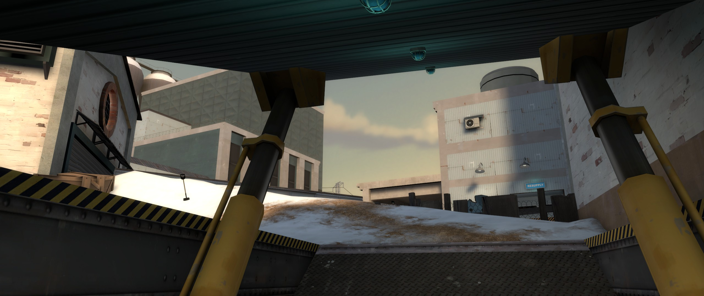
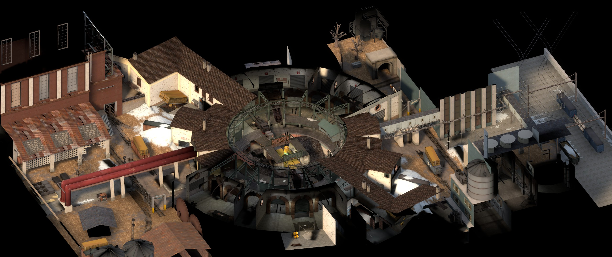
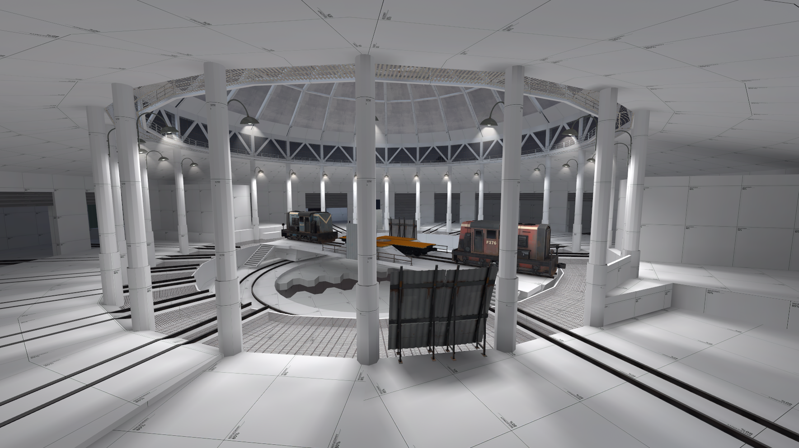
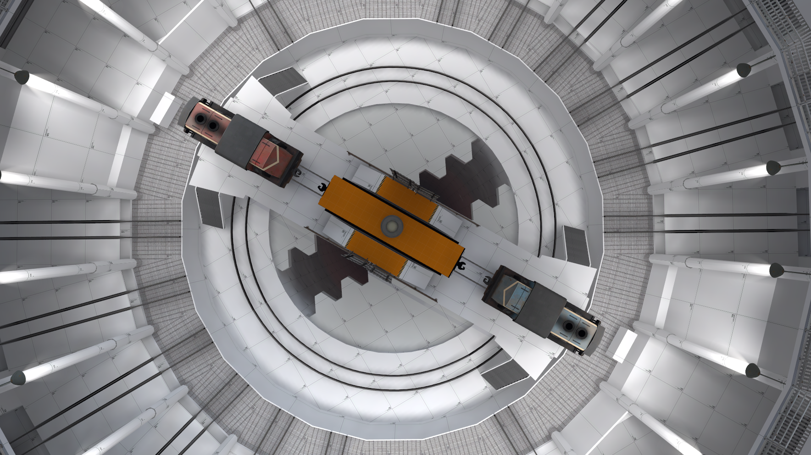
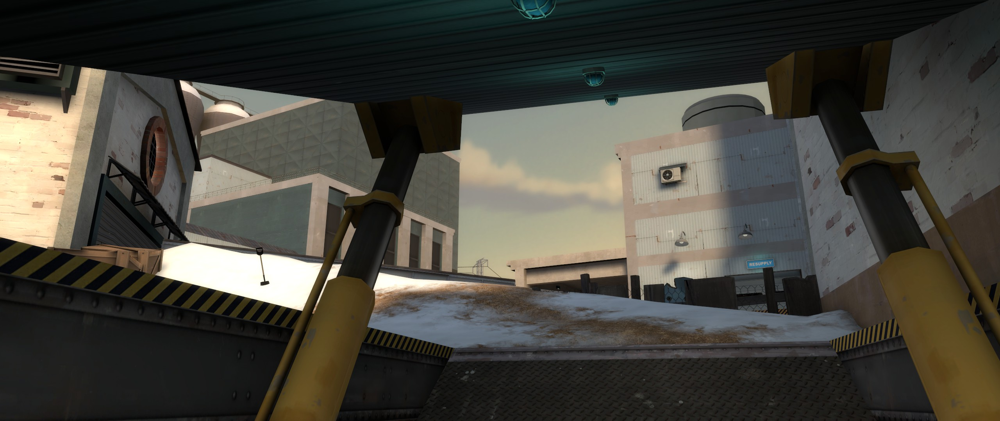
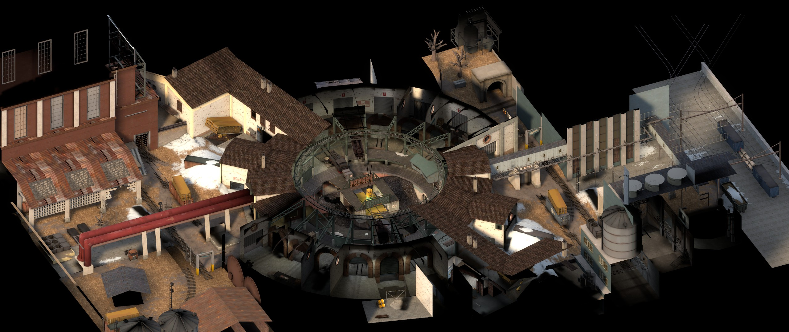
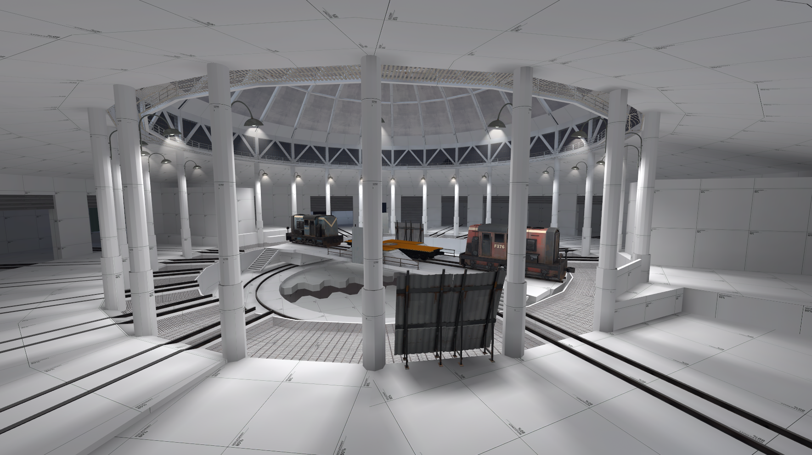
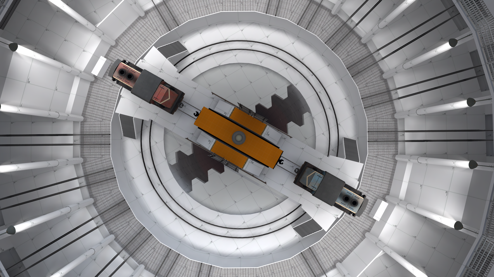

Portfolio
Rotunda (Team Fortress 2)
 







Rotunda is my first complete Team Fortress 2 level: conceived, built, and released from initial concept to final optimization. Created in collaboration with several TF2Maps.net community members, it began as a technical and artistic experiment and grew into a fully realized multiplayer level that was officially licensed by Valve and added to Team Fortress 2 in the 2023 Summer Update.
I oversaw or directly handled every stage of development, including concept design, layout iteration, art direction, lighting, optimization, promotional materials, as well as communication with Valve for release and updates.
This retrospective outlines the project’s evolution, design decisions, technical problem-solving, and team collaboration that turned an experimental prototype into an official, shipped game level.
Steam Workshop
Official TF2 Wiki
Promotional Trailer
Idea
The project began as an art and lighting test for a realistic German railway roundhouse, based on the Rundlokschuppen Rummelsburg in Berlin, which is a fantastic setpiece for level design all by itself. This proved challenging, as the brush-based Source Engine gets rather cranky about angled geometry. A great deal of trickery, experimentation, and optimization was required to create a convincing round (though technically 24-sided) building as the level’s central structure. During this stage, I worked primarily from photographic reference of the real building and similar industrial architecture.
The original concept was far more expansive and dynamic: the roundhouse was intended to serve as the middle control point in a larger Territorial Control level tentatively named tc_hex, comparable to Call of Duty’s and Battlefront’s Domination modes. The central point structure, initially more nimble, was meant to rotate during certain game states, forcing players to adapt to a dynamically shifting environment. After much experimentation with rotating geometry in the Source Engine, this feature was cut for reasons that should be obvious to anyone who has ever fought with this engine. Still, it was very fun to try, and I consider it an early lesson in recognizing when technical limits outweigh ambitious ideas.
Layout
Once the concept turned into a playable layout, I began testing in earnest using TF2Maps.net’s excellent testing and feedback infrastructure. Constant player feedback was instrumental in improving both the level and my own skills. Before the Steam Workshop release, Rotunda was tested over 30 times, usually with me present.
The level underwent several reworks. The team spawns went through at least three iterations, one of which required rotating the level’s center by 45° to improve player flow toward mid. The central control point structure – originally a simple turntable with two trains facing each other – was reworked even more extensively. The final (less realistic) version serves as a piece of high ground and a visually dominant objective, while also blocking sightlines to aid performance. It can be considered a compromise between the thematic idea, gameplay feedback, and technical considerations.
Interestingly, the train hazard passing in front of the team spawns required very little iteration beyond bug fixes and collision improvements. Players immediately accepted it (and often praised it for its novelty).
I added new routes and flanks: a lower basement route for sneaky players, high platforms for explosive classes, and a “back gallery” almost encircling the central courtyard. Balancing sightlines here was challenging; since the layout uses mirror symmetry, any change had to be reflected across the level, potentially creating unintended new sightlines for the next iteration of testing.
This stage lasted roughly two months. Parts of the exterior were made in collaboration with community mapper Rhamkin. We worked in tandem, exchanging nightly builds and feedback.
Artpass
Some layouts require intense brainstorming to fit a theme, since fun TF2 layouts often ignore architectural (or, really, any) logic. Luckily, Rotunda’s artpass came naturally. I had already gathered references for specific areas, which helped establish the intended atmosphere and decide which stock TF2 assets to use, which to source from other community creators, and which to produce ourselves. During this stage I enlisted modellers FGD5 and Fancyy.
To meet the Summer Update deadline, I used as many existing assets as possible, but some things had to be made from scratch to sell the level’s premise. Two hero props stand out: FGD5’s steam engine, based on the German BR81 locomotive, and the control point’s nuclear waste tank, based on a child’s understanding of “radioactive danger.” As is standard for TF2 levels, I designed lighting and layout around these props to make them both visual anchors and navigation landmarks.
The main areas (mid, basement, gallery, exterior, spawns) draw from European railway infrastructure and industrial facilities. The level is meant to look abandoned, but not dead: someone clearly still uses it for storage, but it’s seen better days. TF2’s trademark sense of spytech and mystery is intended to come through in details: a truck engine still running, flickering computers, mysterious boxes on mysterious cargo platforms. Nothing is more fun, as both creator and player, than imagining the level as part of a larger unseen whole.
This stage lasted about a month. I handled texture recolors and some material edits myself, while bespoke models (steam engine, waste tank, metal beams, handrails) were created by our two modelers, often from my blockouts or specifications. We also used a modest selection of community assets in addition to TF2’s base library.
Optimization
The Source Engine’s BSP visibility system can be helpful in reducing render load, but large, complex spaces tend to defeat it. Rotunda features both. Manual vis optimization mainly involved cutting visleafs to control what could be “seen” from specific areas, but some small layout changes were necessary too. I added sightline blockers, occluders, and manual prop fades to nearly every model. These changes reduced overdraw and improved framerates for the central area.
This stage lasted about a week.
Release & Promotion
As the project neared completion, I created promotional graphics such as the Steam Workshop thumbnail and other related materials. I also contacted Tails8521 about producing a gameplay trailer to increase visibility (and because it’s cool).
Rhamkin and I combed through playtest demos (in-game recordings) to identify interesting moments, which Tails used to construct and film a cinematic flythrough of the level. As a bonus, this process helped give the level a few minor touch-ups and lighting improvements that were previously overlooked.
Eventually, the project was selected by Valve for inclusion in Team Fortress 2. I coordinated the handover of project files to Valve and implemented additional changes based on technical requirements and feedback.
Teamwork
While I consider Rotunda “my” project, it would not have been possible without the team. Rhamkin’s guidance and experience, FGD5’s and Fancyy’s modeling and texturing, and Tails8521’s trailer were all essential to realizing the level’s full potential.
While this project was at times stressful, I blame this fully on my own (relative) inexperience, as working in collaboration with my fellow community members and creatives was a fantastic experience from start to finish. Communication required patience from all of us, since every team member was from a different European country. Humor helped here, as well as Rhamkin’s contagious optimism regarding the map’s success.
Through this project, I learned about level design, player flow, scripting, environmental art, project management, and intercultural communication, and probably a dozen other subjects. The experience and its success cemented my passion for level design and my desire to enter the game industry professionally. It remains a foundational experience in the way I think about spatial design.
Rotunda was made in collaboration with:
Project Title Two


Description text here. Include design intent, challenges overcome, and what you learned through iteration.
Additional project commentary: describe scripting solutions, mechanics tuning, or player feedback integration. Summarize results and key takeaways.